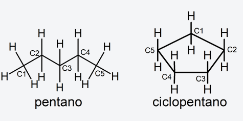
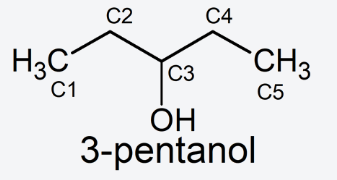
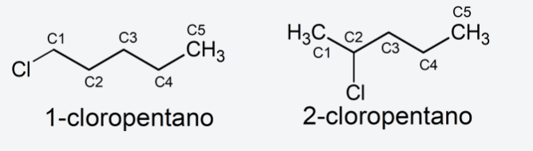

¿Qué es la nomenclatura química?
En química se conoce como nomenclatura (o nomenclatura química) al conjunto de normas y fórmulas que determinan la manera de nombrar y representar a los diversos compuestos químicos conocidos por el ser humano, dependiendo de los elementos que los componen y de la proporción en cada elemento.
La importancia de la nomenclatura química radica en la posibilidad de nombrar, organizar y clasificar los diversos tipos de compuestos químicos, de manera tal que solamente con su término identificativo se pueda tener una idea de qué tipo de elementos los componen y, por lo tanto, qué tipo de reacciones pueden esperarse de estos compuestos.
Existen tres sistemas de nomenclatura química:
Sistema estequiométrico o sistemático (recomendado por la IUPAC). Nombra los compuestos en base al número de átomos de cada elemento que los forman. Por ejemplo: El compuesto Ni2O3 se llama trióxido de diníquel.
Sistema funcional, clásico o tradicional. Emplea diversos sufijos y prefijos (como -oso, -ico, hipo-, per-) según la valencia atómica de los elementos del compuesto. Este sistema de nomenclatura se encuentra mayormente en desuso. Por ejemplo: El compuesto Ni2O3 se llama óxido niquélico.
Sistema STOCK. En este sistema el nombre del compuesto incluye en números romanos (y a veces como subíndice) la valencia de los átomos presentes en la molécula del compuesto. Por ejemplo: El compuesto Ni2O3 se llama óxido de níquel (III).
Por otro lado, la nomenclatura química varía dependiendo de si se trata de compuestos orgánicos o inorgánicos.
Antes de hablar de la nomenclatura de los distintos tipos de compuestos orgánicos es necesario definir el término “localizador”. El localizador es el número que se utiliza para indicar la posición de un átomo en una cadena o ciclo hidrocarbonado. Por ejemplo, en el caso del pentano (C5H12) y el ciclopentano (C5H10), se enumera cada átomo de carbono como se muestra en la siguiente figura:

Por otra parte, es conveniente mencionar la tetravalencia del carbono, lo que quiere decir que este elemento tiene 4 valencias, por tanto, puede formar solo 4 enlaces con una amplia combinación de ellos. Eso explica la razón por la cual en cada compuesto orgánico casi nunca veremos, ni pondremos un átomo de carbono con más de 4 enlaces.
En química orgánica existen principalmente dos sistemas de nomenclatura:
Nomenclatura sustitutiva. Se reemplaza un hidrógeno de la estructura hidrocarbonada por el correspondiente grupo funcional. Dependiendo de si el grupo funcional actúa como sustituyente o como función principal, se le nombrará como prefijo o sufijo del nombre del hidrocarburo. Por ejemplo:
Función principal. Se sustituye un hidrógeno del carbono 3 del pentano por el grupo -OH (-ol). Se nombra: 3-pentanol.

Sustituyente. Se sustituye un hidrógeno del carbono 1 del pentano por el grupo -Cl (cloro-), se nombra, 1-cloropentano. Si se sustituye un hidrógeno del carbono 2, se nombra, 2-cloropentano.
